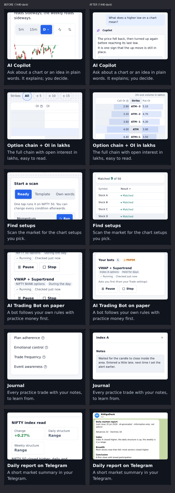
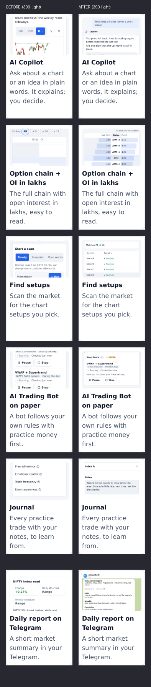

Front door: each image now shows what its card says
Each card's image is now made at the card's own 16:10 shape (720 x 450), so the whole picture shows; before, a 720 x 900 shot was cropped to its middle.
| Card | Before (what showed) | After (what shows) |
|---|---|---|
| AI Copilot | a cut chart answer: half a sentence, the 5m / 15m / D bar, a few candles; no question, no chat | his question in a bubble and the Copilot's plain-words answer under it |
| Option chain + OI in lakhs | the "Strikes All ±5" bar and an empty table: every OI figure and bar hidden | "(OI and volume in lakhs)", Call OI | Strike | Put OI with figures and bars; strikes as ATM, ATM±n |
| Find setups | "Start a scan / Ready / Template / Own words", cut; nothing scanned | a ready scan run: "Matched 9 of 50" and the list of matches |
| AI Trading Bot on paper | the middle of two bot rows, cut; names of real indices | "Your bots · PAPER", one running bot: its strategy, what it trades, how long it holds, how it enters; Pause / Stop |
| Journal | the names of the discipline score's parts; no trade, no note | one practice trade opened with the trader's own notes |
| Daily report on Telegram | the app's report sheet (not Telegram), a real index name | the Telegram message the app sends (the backend's own text), in a Telegram-style chat |
Public surface rule (CLAUDE.md §3)
- Made-up data only; placeholder names ("Index A", "Stock A".."Stock I"); no real index or stock name.
- No price: strikes shown by their place from the money (ATM, ATM+1, ATM−1), premiums, fills, amounts, P&L and R hidden; the Telegram message has no close (the app leaves that line out when the close is unknown).
- OI in lakhs is shown (made-up figures, not tied to a named instrument). No buy / sell / target / stop-loss words; the generator checks every shot's visible words.
1440, dark

390, light
